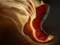
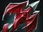
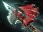
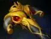
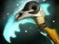
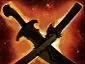

Poison Attack
отравляет врага, замедляет и наносит дополнительный урон. Используй для давления на линии.

Мид — позиция 2
сильный лейнер, магический и постепенный урон.
давить врага на линии, мешать ему добивать крипов, рано участвовать в драках и сносить башни.
добивай крипов с руки и способностями. После линии фарми ближайшие лагеря и волны, но не забывай помогать команде.
отравляет врага, замедляет и наносит дополнительный урон. Используй для давления на линии.
создаёт область, которая наносит урон и мешает врагам эффективно использовать пассивные способности.
враги, атакующие тебя или применяющие к тебе способности, получают ответный эффект; повышает твою выживаемость.
сильное замедление и урон по выбранной цели. Хорошо использовать на вражеском керри.





